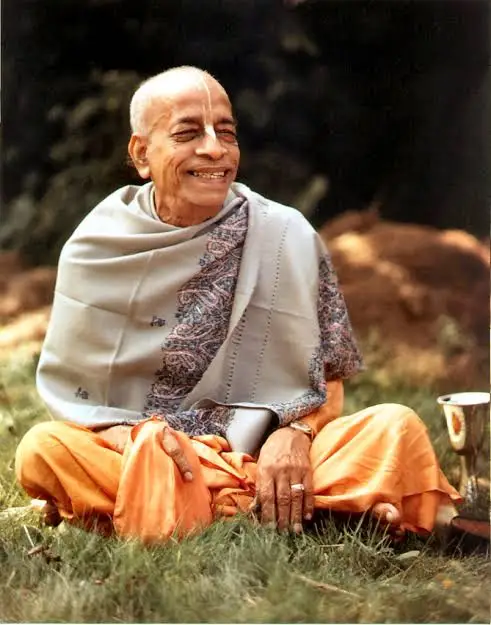

Srila Prabhupada
1896 - 1977
Srila Prabhupada
Abhay Charanaravinda Bhaktivedanta Swami Prabhupada (IAST: Abhaya Caraṇāravinda Bhaktivedānta Svāmī Prabhupāda; Bengali: অভয় চরণারবিন্দ ভক্তিবেদান্ত স্বামী প্রভুপাদ) (1 September 1896 – 14 November 1977) was a spiritual, philosophical, and religious teacher from India who spread the Hare Krishna mantra and the teachings of "Krishna consciousness" to the world. Born as Abhay Charan De and later legally named Abhay Charanaravinda Bhaktivedanta Swami, he is often referred to as "Bhaktivedanta Swami", "Srila Prabhupada", or simply "Prabhupada".[3] To carry out an order received in his youth from his spiritual teacher to spread "Krishna consciousness" in English, he journeyed from Kolkata to New York City in 1965 at the age of 69, on a cargo ship with little more than a few trunks of books. He knew no one in America, but he chanted Hare Krishna in a park in New York City, gave classes, and in 1966, with the help of some early students, established the International Society for Krishna Consciousness (ISKCON), which now has centers around the world. He taught a path in which one aims at realizing oneself to be an eternal spiritual being, distinct from one's temporary material body, and seeks to revive one's dormant relationship with the supreme living being, known by the Sanskrit name Krishna. One does this through various practices, especially through hearing about Krishna from standard texts, chanting mantras consisting of names of Krishna, and adopting a life of devotional service to Krishna. As part of these practices, Prabhupada required that his initiated students strictly refrain from non-vegetarian food (such as meat, fish, or eggs), gambling, intoxicants (including coffee, tea, or cigarettes), and extramarital sex. In contrast to earlier Indian teachers who promoted the idea of an impersonal ultimate truth in the West, he taught that the Absolute is ultimately personal. He held that the duty of a guru was to convey intact the message of Krishna as found in core spiritual texts such as the Bhagavad Gita. To this end, he wrote and published a translation and commentary called Bhagavad-Gītā As It Is. He also wrote and published translations and commentaries for texts celebrated in India but hardly known elsewhere, such as the Srimad-Bhagavatam (Bhagavata Purana) and the Chaitanya Charitamrita, thereby making these texts accessible in English for the first time. In all, he wrote more than eighty books. In the late 1970s and the 1980s, ISKCON came to be labeled a destructive cult by critics in America and some European countries. Although scholars and courts rejected claims of cultic brainwashing and recognized ISKCON as representing an authentic branch of Hinduism, the "cult" label and image have persisted in some places. Some of Prabhupada's views or statements have been perceived as racist towards Black people, discriminatory against lower castes, or misogynistic.[4][5][6] Decades after his death, Prabhupada's teachings and the Society he established continue to be influential,[7] with some scholars and Indian political leaders calling him one of the most successful propagators of Hinduism abroad.[8][9][10][11]
Books
- On The Way to Krishna
- Elevation to Krishna Consciousness
- Krishna Consciousness the Matchless Gift
- Krishna the Reservoir of Pleasure
- Perfection of Yoga
- Krishna Consciousness – The Topmost Yoga System
- Beyond Birth and Death
- Perfect Questions, Perfect Answers
- Easy Journey to Other Planets
- Transcendental Teachings of Prahlad Maharaj
- Coming Back
- Message of Godhead
- Civilization and Transcendence
- Hare Krishna Challenge
- Scientific Basis of Krishna Consciousness
- Sword of Knowledge
- Nectar of Instruction
- Path of Perfection
- Issues of Back To Back to Godhead Magazine
- Prabhupada Lilamrita